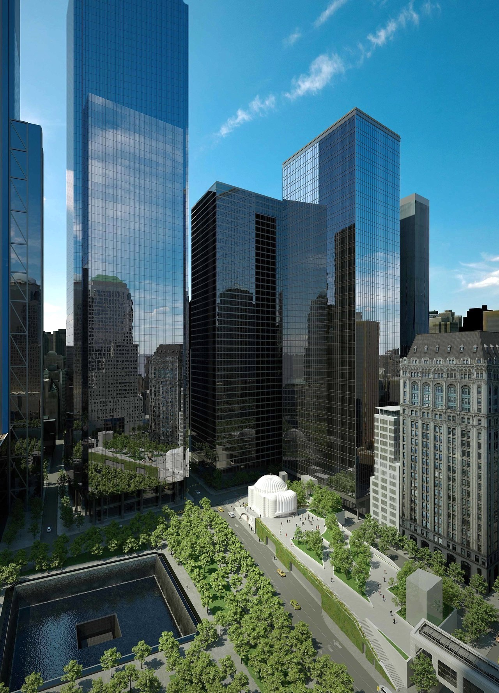

#01
#02
New York’s
Governor
Saves Santiago
Calatrava’s
World Trade
Center Church
It's been two years since construction of the St. Nicholas Greek Orthodox Church and National Shrine at the World Trade Center site came to a halt, but a new 13-member board named the Friends of St. Nicholas, put together by New York governor Andrew Cuomo, is pushing the project toward completion. Construction of the church, which was designed by Spanish-Swiss architect Santiago Calatrava, was halted in late 2017 when, according to construction company Skanska U.S.A., the Greek Orthodox Diocese of America ran out of money to complete the project.
Since then, the church has sat at the base of the 9/11 memorial plaza, covered in white tarp as its fate remains in gridlock—but will no longer, thanks to the new board of the nonprofit, which will continue to raise funds for the rebuild, oversee the construction, and audit the project. Members of the board include the deep-pocketed donors Cuomo called upon last May, like John Catsimatidis, billionaire owner of the Gristedes Foods supermarket chain; and will be chaired by Dennis Mehiel, the chairman of the Battery Park City Authority from 2012–2018.
"We're very
grateful to
Governor
Cuomo;
without
him we
would not
have gotten
through
the political
morass of
getting [the
church]
rebuilt,"
says Father Alex Karloutsos, assistant director of public affairs for the church.
The church sits on land that is owned by the Port Authority, which leases the property to St. Nicholas's for $1 a year. Patrick Muncie, a spokesperson for the governor, told AD in May that "the governor reached out to the Port Authority, which is trying to help the project that has been stalled for years, and is in desperate need of a new entity to raise funds because it still has not made progress." A spokesperson for the Port Authority, meanwhile, said that while it has previously offered to help the church with technical assistance, it never offered financial support, as it believes that responsibility rests with the church. Following the governor's announcement of the new board, Port Authority executive director Rick Cotton remarked that "the Port Authority welcomes the news that, following consultation with the governor and the Port Authority, the Archdiocese has formed the Friends of St. Nicholas and that construction will soon resume at the south end of our campus."
A rendering of the church as it sits at the base of the 9/11 memorial. Architectural Rendering by Santiago Calatrava Architects & Engineers: St Nicholas Greek Orthodox Church at the World Trade Center - © 2013 FESTINA LENTE LLP.
"There were mistakes made in regards to the building process and some funds that were misdirected, but they're all back now, so we're moving forward," says Karloutsos. "We're going to begin rebuilding in two to three months. This is our focus, and we're very grateful to all of the construction groups who have been patient with us while we figure out the direction that we're taking." According to Karloutsos, the new completion date is set for spring 2021.